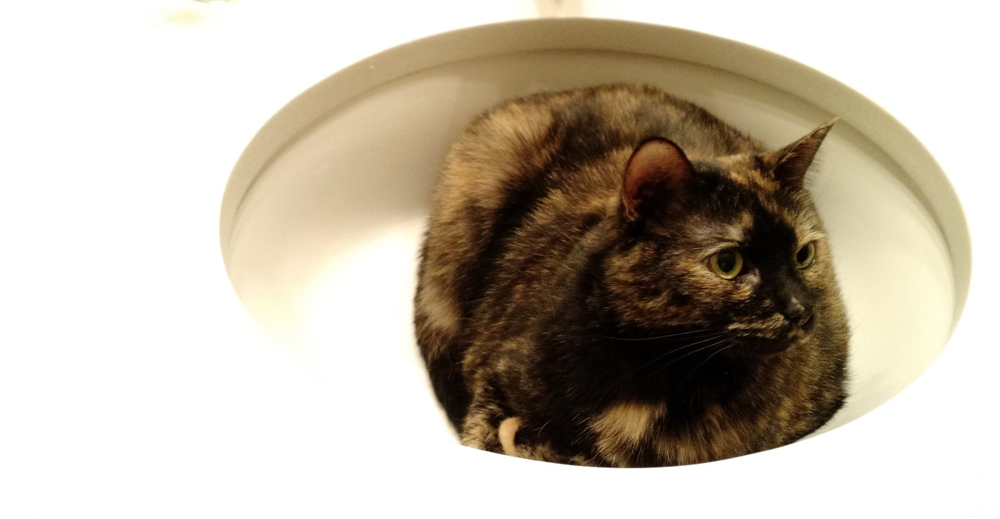

The view from our apartment's rooftop patio makes it tempting to bundle up and grill something soon.
Tragedy
The last time we chose an apartment without knowing the city, we ended up in the Tenderloin where catcalling leads to brutal stabbings. For Washington, we booked a full month of AirBnB for $1,800 so we could scope out the area before signing a lease. As you might imagine, it's tricky to score 31 days of pet-friendly, furnished, walkable housing so we reserved our place four weeks in advance.
Just three days before our flight, the host canceled, leaving us stranded! Her explanation: "I just don't feel like it anymore."
AirBnB tried to help but was unable to find a walkable place that allowed cats anywhere nearby. Damn.
Amanda and I scrambled to find a place to stay, with discouraging results. Fortunately, she's much better at Craigslisting than I am (unless you want to find Nigerian scammers, in which case I'm your man). She somehow found a $1,500 sublet, in a gorgeous apartment complex, in one of Seattle's best neighborhoods (Capitol Hill). We were hesitant - too good to be true and so on - but so far it's working out great!

Downstairs, the always-open lounge provides a big-screen TV and plenty of workspace with free wifi. So far, we've gotten away without hooking up Internet at the new place. Side effect: less Facebooking, more actual facetime together.

The apartment itself is simple but nice. I don't love carpet, but it's cozier than hardwoods during Seattle's freezing nights.

Fatty's already at home.

First bed

Second bed